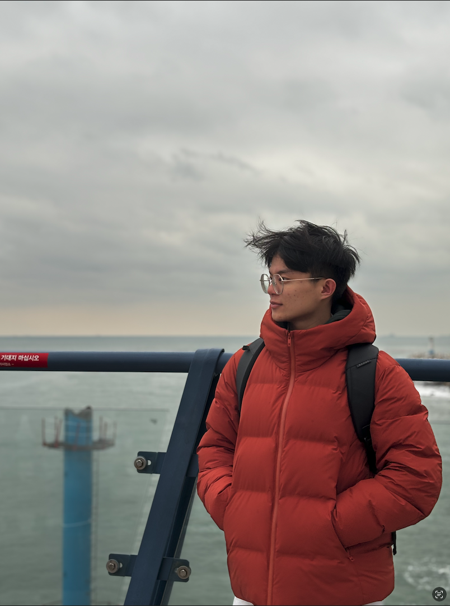
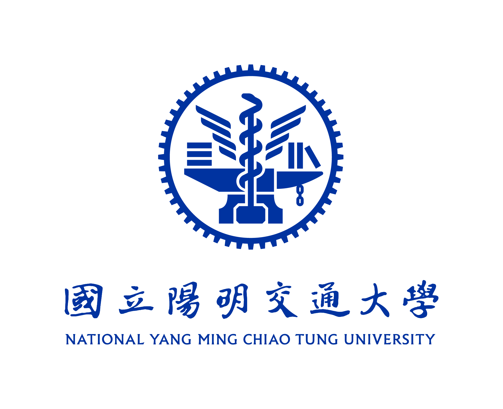
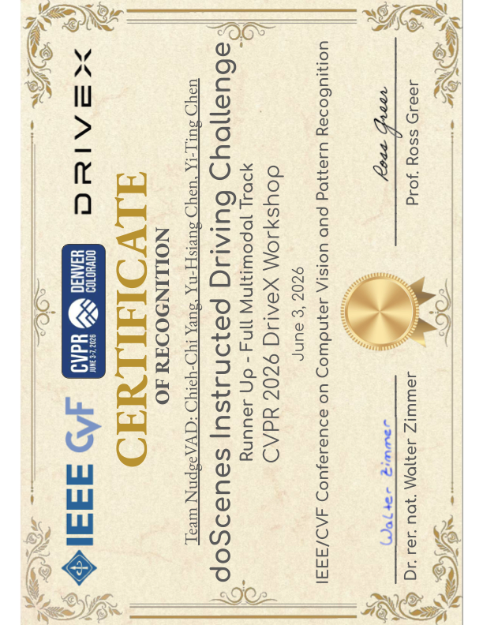

CVPR 2026 doScenes Instructed Driving Challenge
NudgeVAD: Language-Nudged End-to-End Driving via FiLM Residuals
Ablation Track: 1st Place Winner; Full Multimodal End-to-End Track: Runner-up.
I am a master's student in Computer Science at National Yang Ming Chiao Tung University, advised by Prof. Yi-Ting Chen in HCIS Lab. My research focuses on autonomous driving safety, heterogeneous traffic simulation, computer vision and deep learning.
I was a visiting researcher at the MSC Lab, University of California, Berkeley, working with Prof. Masayoshi Tomizuka and Prof. Yi-Ting Chen on data-efficient and controllable traffic simulation. Previously, I graduated from National Tsing Hua University in the top 1% of my class.
I am open to research collaboration and seeking Fall 2027 PhD opportunities.

CVPR 2026 doScenes Instructed Driving Challenge
Ablation Track: 1st Place Winner; Full Multimodal End-to-End Track: Runner-up.
ICRA 2026
ECCV 2026
ICCV 2025 DriveX
NSTC 2023
 Incoming Video Deep Learning Research Intern, Synology
Incoming Video Deep Learning Research Intern, Synology06/2026 - 12/2026
06/2025 - 12/2025

HCIS Lab, National Yang Ming Chiao Tung University09/2024 - 06/2026
06/2023 - 04/2026
 IS Lab & Institute of Service Science, National Tsing Hua University
IS Lab & Institute of Service Science, National Tsing Hua University09/2022 - 06/2024
09/2024 - 06/2026
Master of Computer Science, HCIS Lab. Advisor: Prof. Yi-Ting Chen.
09/2020 - 06/2024
National Tsing Hua UniversityBachelor of Technology Management, IS Lab. Advisor: Prof. Hung-Min Sun. Ranked 2/65, top 1% of class.

NudgeVAD doScenes Recognition CertificateI am open to research collaboration and seeking Fall 2027 PhD opportunities.